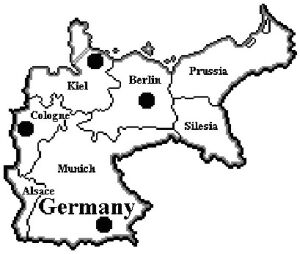

|
By now, I’m sure you all know what I’m about to say. Much of the material in this article appears in the Gamers’ Guide to 1900, which can be found in the variants section of the Diplomacy Pouch under 1900. I recommend that those of you familiar with the Gamers’ Guide to 1900 proceed to the end of this article. There you will learn how Germany has performed in 1900 games to date. I suspect the results might surprise you. Enjoy! -- Baron  In my opinion, Diplomacy does not do the Second Reich justice. At the outbreak of World War I, Germany had the single strongest army in the world by a significant margin, the second strongest navy behind Britain’s, and the second strongest economy behind that of the United States. As James Stokesbury remarks in A Short History of World War I, “For more than three years [during World War I] the Germans, with substantial help from their friends, had stood the world on its ear. It was a stupendous feat of arms.” By contrast, Germany in Diplomacy seems downright pathetic. Fight a two-front war? Forget it! Germany is unlikely to last long against a determined Anglo-French alliance. Should the Russians invade from the east in strength, the Kaiser will soon be asking if there is time for another game that evening. Of course, having a dominant Germany, though it might make for good history, does not necessarily make for a better game. The game results shown in the introductory article to this series suggest that Germany is just about right in terms of performance. The Reich has recorded 325 solos, 594 draws, and 2780 losses out of 3699 observed games. The average number in each of these three categories is 323, 616, and 2760 respectively. Germany’s Great Power Rating (GPR) of 25.51 is closer to the average (25.71) than the GPR of any other Great Power. If play balance is something sought after, the question must be asked: why tinker with Germany at all? The answer to this question has to do with the impact of German changes on the other Great Powers as well as on Germany itself. The same statistics that show Germany to be "about right" in terms of solos, draws, and losses also show that Diplomacy has its “haves” and “have-nots.” France, with 362 solos and only 2591 losses, and Russia, with a staggering 446 solos, are superpowers. On the flip-side, Austria-Hungary is a weakling with only 283 solos and 2881 losses, and Italy is practically comatose with a meager 219 solos and a horrendous 2951 losses. If the goal was to knock France and Russia down a peg or two, while resuscitating Austria-Hungary and Italy, it seemed to me that the best way to do so might be to make Germany and Britain a little stronger. As I discussed in the article on Britain, the logic behind strengthening these two Great Powers went like this. First, Germany and Britain were the acknowledged powers on land and sea at the turn of the century. Making them strong, therefore, had a sound historical basis. Second, and more importantly, both nations have a great deal of military interaction with France and Russia in a typical Diplomacy game, but usually not as much, at least at game-start, with Austria-Hungary and Italy. This means that any advantages gained by Germany and Britain were likely to be used against France, Russia, and each other. If France and Russia were distracted, this should benefit Austria-Hungary and Italy since the former often contends with Russia for supremacy in the Balkans while the later frequently matches up against France for dominance in the Mediterranean. There was the danger that Germany might use its new found muscle to try to annex the German portions of Austria-Hungary, while Britain might attempt to exercise claims in the Mediterranean at Italy's expense, but I was optimistic that this solution would work. Initial results, while only preliminary at this time, would appear to confirm my hypothesis. Well, I’ve said I made Germany stronger. Let’s take a look now at how this was accomplished. At first glance, Germany appears to have undergone a dramatic transformation. In reality, though, all but two of the changes are cosmetic. The boundaries for the German spaces are redrawn to reflect historical realities, but the relationships between the spaces as we know them in Diplomacy have been maintained. Munich, for example, looks vastly different, but it still touches the same spaces as in Diplomacy (except as discussed below). The new boundaries for Munich simply reflect the historical boundaries of the states included in the Munich space: Baden, Bavaria, southern Hanover, Hesse, Hohenzollern, Palatinate, Saxony, Thuringia, and Wurttemberg. The two significant changes to Germany’s internal arrangement are as follows:
I mentioned above that Germany now starts the game with a third army. What exactly are the implications for Germany given this additional unit? In Diplomacy, Germany can usually count on getting Denmark and Holland in ‘01. Occupation of Belgium is usually more problematic, but it happens often enough not to be remarkable. In 1900, Germany will most likely get Belgium, Denmark, and the Netherlands (Holland renamed) with little difficulty if it wants them. Additionally, gaining a fourth SC is not out of the question. A German thrust from Munich into Tyrolia in Spring ’00 puts an army adjacent to four foreign SCs: Switzerland (which I’ll discuss in a moment), Milan (a new Italian SC), Vienna, and Trieste. Germany could also move east and threaten Warsaw in coordination with Austria-Hungary (just like Conrad von Hotzendorf envisioned). With three (or four!) builds likely in ‘00, ‘01 will see a seven (or eight!!) SC Germany dominating the center of the board. The game is barely one year old and Germany is already nearly halfway to victory and the unquestioned leader of the pack. Leben ist gut, ja! Well, maybe not.... First, Germany may be big and bad, but it’s certainly not invulnerable, particularly when both Britain and France have very good chances of reaching six or even seven SCs themselves in ’00. Second, as Scott Morris points out in his article "Winter 1901: The Three Build Opening" in Diplomacy World #82, explosive early growth has not always benefited Germany. To quote Scott: "Germany had a three build opening in 8 of the 56 games studied. Unfortunately, of those 8 games, Germany went on to win BUTKUS! ZIP! NADA! The Kaiser closed the deal 0 of 8 games after a three build opening. This tells us that Germany, more than any other country on the board is susceptible to the early leader syndrome. When you have five neighbors and you expand quickly, your odds of being noticed are greater." Very true! Thaddeus Black, in his article “The Strongest Country on the Diplomacy Map” in issue #81 of Diplomacy World, writes: "It is a curious Diplomacy fact that the very perception among a particular circle of players that one country is stronger than another has a big impact on the game; if England, Germany, Austria, and Turkey all believe Russia is unstoppable, for example, then you had better hope that you don't get stuck with Russia, hadn't you, because those guys are going to knock the poor Tsar back to Siberia." Third, in addition to being noticeable and having lots of neighbors, the Kaiser has to deal with an image problem. Admit it…what first comes to mind when you think of Germany? How about sneering, monocle wearing Prussian officers; endless ranks of gray-coated soldiers trampling over the land in their hob-nailed boots; burning villages; poison gas; submarines sinking defenseless ships in icy waters; air raids; concentration camps; etc.; etc. You get the picture. I don’t think it’s a coincidence that the German units are black. So what's a Kaiser to do? Germany almost can't help but be seen as the Power to watch in ’01. The Reich's neighbors are likely to view Germany's concentration of forces with both suspicion and alarm. Potential allies may be wary of Germany based on the perception that having the Reich as an ally is like having a pet tiger: you never know when the tiger may decide to eat you. (Interestingly, it was growing fear of German dominance in Britain, France, and Russia that contributed directly to World War I.) I think part of the answer to this dilemma may be for Germany to play like the 600-pound gorilla it is perceived to be. When you’re a giant, don’t be shy. Instead of moving timidly or being apologetic about Germany’s virtues, I feel the Kaiser should act like he really does belong to the master race. While there's no need to be as arrogant and clumsy as the Germans actually were, there should also be no need to mollycoddle the other players or be overgenerous in dealing with them. Failure by Germany to grab its "fair share" (and then some) when the opportunity presents itself is probably self-defeating in the long run. No doubt Germany will need all of the builds it can get to expand against determined resistance on several fronts, the curse of having abundant neighbors. In any case, a powerful Germany bulging with units may not need to search as hard for allies as my discussion above might lead one to believe. There are bound to be countries that will look to Germany for help after the first game-year shows how the alliance picture is shaping up. If Britain and France are sliding towards war, both will be knocking on the Kaiser’s door and asking for assistance. If, on the other hand, Britain and France are looking chummy (and a B/F is relatively hard to hide), then the Pope is sure to call. In the east, the Kaiser can probably count on the Archduke seeking aid if the Dual Monarchy and Russia are bumping heads over Rumania. For his part, the Tsar will almost certainly have on his most pleasant face and offer his support in a war against the ramshackle Habsburg Empire or the untrustworthy democracy in Albion in return for German guarantees regarding Sweden. Even the Sultan, if he is smart, will chat with the Kaiser on a regular basis since a strong Germany may be just the tonic to relieve pressure on the Ottoman Empire being applied by an expanding Austria-Hungary or Russia. Let’s spend some time now discussing other differences between 1900 and Diplomacy that potentially impact on German strategy. Germany’s neighbor to the southeast, Austria-Hungary, begins the game with three armies instead of two armies and a fleet. Also, the map has been redrawn to allow movement between Budapest and Bohemia. Finally, the Italian SC that was in Venice has now been moved to a new space, Milan, and no longer borders Trieste. These subtle changes carry significant implications for Germany’s diplomatic efforts. The Kaiser might not consider Austria-Hungary much of a threat at game-start in 1900. Peace between the two Powers is the norm in Diplomacy. In fact, an immediate attack by one on the other is usually considered sheer folly. This perception, when combined with a more muscular Reich, may lead the Kaiser to believe that it would be suicidal for Austria-Hungary to take on the German behemoth. Such is not necessarily the case, however. First, not having to worry about an immediate Italian thrust into Trieste, as discussed in the article on Austria-Hungary, gives the Archduke more freedom of action. Second, the cumulative effect of having three armies and being able to move directly from Budapest to Bohemia is that the Dual Monarchy can put two armies adjacent to Munich in Spring ’00 and still capture Serbia. If the Archduke makes such an opening in conjunction with a Russian thrust from Warsaw into Prussia or Silesia, things could suddenly get very uncomfortable for the Kaiser. If A/R is cooperating with Britain and/or France, German life expectancy might be shorter than anyone expected. Obviously, to avoid such an embarrassing situation, the Kaiser must attempt to remain on good terms with the Archduke. I suspect this will not be too difficult, at least early on. Austro-Hungarian concerns about Russian or Turkish intentions will tend to be high in most games. Playing on Vienna’s justifiable fears of Russians spilling into the Hungarian Plains or Turks driving north through the Balkans or a Juggernaut doing both, should work to discourage any western options the Archduke might otherwise consider. The Kaiser should also point out to the Archduke how vulnerable Rumania is and how its capture allows for a second Austro-Hungarian build in ’00 while at the same time denying Russia a build. If, right up front, the Kaiser offers German support against the Tsar’s hordes in the form of A Berlin or A Munich to Silesia, the Archduke might not even bother to fully explore his other alliance alternatives. This is especially true if the Archduke is new to the variant and, therefore, used to the dynamics of Diplomacy where “Tsar” is often synonymous with “the bogeyman” in Vienna. As for Russia, it looks much the same as it does in Diplomacy. Other than splitting Moscow into two spaces, Moscow and Siberia, Russia has not been changed. Russia’s position, however, is not as favorable as it is in Diplomacy. The three armies possessed by both Germany and Austria-Hungary enable each Great Power to take on a more aggressive attitude towards the Russian Empire. In fact, the Kaiser might even want to consider an eastern opening in alliance with the Dual Monarchy. If Germany successfully opens with F Kiel to Denmark, A Cologne to Belgium, A Berlin to Prussia and A Munich to Silesia, while Austria-Hungary is able to move A Budapest to Galicia, A Vienna to Budapest, and A Trieste to Serbia, the results can be devastating for Russia. Consider:
Even if all of these moves are not all successful, as will probably be the case, the pressure on Russia will be tremendous. If Turkey can be convinced to join in on the slaughter, the Bear is sure to be killed quickly. With Russia’s demise, Germany’s eastern frontier becomes much more secure. I know that somewhere Hindenburg and Ludendorff are smiling. I call this A/G opening, which is sure to give the Tsar indigestion, the Connor-Greneoux Gambit in honor of the players to first use it successfully in a 1900 game. Even if such an aggressive anti-Russian opening is not pursued, the Kaiser can still move to keep Russia out of Sweden in Fall ’00 with considerably less fear of retribution. This ability gives the Kaiser significant diplomatic leverage with his Russian counterpart. Of course, nothing says Russia has to be an enemy. If the British look to be a problem, the Kaiser may find that the Tsar’s friendship is a valuable asset. In return for Russian assistance in the north, the Kaiser might even send an army east with the idea of working with the Tsar, especially if an A/T is in the works. An opening move of A Munich to Tyrolia will probably cause panic in Vienna, all the more so if there are Russians in Galicia. The Kaiser needs to be careful, though, in choosing sides. On the one hand, the demise of Russia frequently means that the Dual Monarchy is now free to meddle in central European affairs, something all true-blooded Habsburgs love to do. The Archduke may demonstrate his “gratitude” for earlier German support by moving aggressively against German gains in Russia or against Munich and Berlin. On the other hand, Austria-Hungary often serves as the Reich’s primary buffer against a Slavic invasion from the east, particularly if Russia and Turkey are cooperating. If Germany participates in the partitioning of the Dual Monarchy, the Kaiser may discover, to his horror, just how lonely it can be in the center of the map. Any discussion of relations with Austria-Hungary and Russia must include mention of the Three Emperors’ League (A/G/R). If Austria-Hungary and Russia appear friendly, it might be prudent for the Kaiser to join ranks with them in such a triple. An A/G/R has the potential to hit Britain, Italy, and Turkey hard. In this case, Germany would probably use A Berlin, A Cologne, and F Kiel to take Belgium, Denmark, and the Netherlands, while A Munich assists the Dual Monarchy against Italy or into Switzerland. Turning our attention to the south, we see that Switzerland has not only been made passable, it is now a SC. Opening up Switzerland gives the Reich another opportunity for expansion and allows Germany to apply pressure against France or Italy on a broader front. The problem, of course, is that Switzerland also provides an avenue for France or Italy to use to attack the Reich. Since Switzerland is adjacent to a home SC in each Great Power, the Alps are likely to be a cauldron of activity as Germany, France, and Italy all vie for control of the strategically important Swiss SC. It should be noted, however, that Switzerland is arguably of far greater importance to both France and Italy than it is to Germany, at least initially. This and the fact that Germany has an “extra” army (i.e., Germany can acquire three neutral SCs and still have an army left over for other uses) gives the Kaiser a powerful “chip” to use in his opening negotiations with the President and the Pope. Frequently, the Kaiser will determine which Great Power, France or Italy, wins the battle for possession of Switzerland. A quick glance west at France may give the impression that the Third Republic is stronger than ever. Not only are Portugal and Spain still within France’s sphere of influence, a fourth French unit now appears in Algeria, a new French SC in northern Africa. A Algeria gives France access to two other new African SCs, Morocco and Tripolitania. If we throw in Belgium and Switzerland, France can reach 6 neutral SCs in ’00. Egad! Before prospective Kaisers get too alarmed, however, they should know that France has its hands full. A British fleet in the new Gibraltar space compromises France’s relatively secure corner position and gives the President a number of diplomatic and tactical problems to solve. Italy also requires much more of the President’s attention. Several map changes (i.e., making Switzerland passable and a SC, moving the Italian SC from Venice to Milan, eliminating Tuscany, and adding Gibraltar) make conflict between France and Italy both more likely and more even. In Diplomacy, France makes a tremendous German ally against a hostile England. An alliance with France is probably even more favorable for Germany in 1900. This is because the disposition of British fleets virtually ensures that the Third Republic, not the Reich, will feel the heat of Britain’s wrath. Germany should be able to dominate an F/G in the early going. This is even truer if Italy has joined Britain against France. If a B/I exists, French survival may depend directly on German intervention. This intervention might take the form of an opening move into Switzerland from Munich. Such an opening keeps Italy out of Switzerland in the Spring and greatly eases France’s defensive problems. The upshot is that Germany might even get Switzerland out of the bargain and gain four builds in ’00! If France is hostile, there is really no need for the Kaiser to panic. This is because Germany stands a very good chance of successfully recruiting Italy to its side. Often, all that will be required is the promise of support into Switzerland in ’00. Working together, G/I can easily arrange to have four units on the French border at the end of Fall ’00. These units and the new builds Germany and Italy each get in the Winter are sure to give the President a huge headache as ’01 begins. Turning towards Britain, the first thing the Kaiser should notice is that it starts the game with four fleets, but no army. This means no pesky BEF deploying to the continent or to Norway in Fall ’00. Also, two of the British fleets start in the Mediterranean, far from Germany’s shores. While Britain is likely to get two builds in Winter ’00, its initial position vis-à-vis Germany will probably not be as strong as it is in Diplomacy. The Kaiser should not be fooled into thinking that Britain will be a pushover, however. Even with French help, Germany will have a tough time against Albion. This is because Britain has good growth potential, its fleets control the seas, and the Prime Minister carries considerable diplomatic clout. Just as Germany can hope to play the Italian trump card against France, so too can Britain (using Tripolitania as the bait). Also, if Germany bounced Russia out of Sweden, British promises of support into Sweden may bring the Tsar into the conflict on the Prime Minister’s side. If Britain is such a potentially tough opponent, then perhaps the Kaiser should consider an alliance with Britain. In my mind, this is the alliance to fear in 1900. In all likelihood, a B/G would defeat France easily, particularly if Italy joins in the slaughter. Assuming the situation in the east permits it, the Kaiser can go for the President’s jugular by ordering F Kiel to Denmark, A Berlin to Kiel, A Munich to Alsace, and A Cologne to Belgium in the Spring. These moves would be followed by F Denmark H, A Kiel to Netherlands, A Alsace to Burgundy, and A Belgium S A Alsace to Burgundy in the Fall. When this attack is combined with British pressure, the Third Republic should collapse quickly. At this point, both Germany and Britain would be huge and ready to roll over the rest of the board. From Germany’s perspective, there are two problems in a long-term alliance with Britain, either alone or as part of a triple.
So what happens if Germany finds itself the odd man out in the B/F/G triangle. Both Britain and France have the potential to grow quickly themselves. If they team up (as they did historically), they can ensure the Kaiser sleeps uneasily. Fortunately for Germany, it enjoys several advantages over its western rivals:
In summary, the key differences between Germany in Diplomacy and in 1900 are as follows:
The bottom line to all of this is that Germany is stronger in 1900 than it is in Diplomacy. All of its inherent strength is wasted, however, if not supported by a solid diplomatic effort on the part of the Kaiser. This is because Germany, more so than any other Great Power, suffers from the dreaded “Early Leader Syndrome.” The Kaiser will need to ensure fear of German expansion does not cause the rest of the board to unite against him. If he can’t do this, he’ll probably suffer the same fate as his real world counterpart. This assertion is strongly supported by game results to date, as we will now discuss. As I’ve done in the previous articles, I’ll caution readers against drawing any firm conclusions one way or the other regarding Germany’s performance. The sample size is still much too small to determine with any degree of confidence that Germany is better off or worse off in 1900 than in Diplomacy or that 1900’s play balance is better or worse than Diplomacy’s play balance. The sample of 1900 games can be summarized as follows:
OVERALL RECORD:Many new comers to 1900 write to me to say that I made Germany too strong and that it is practically invincible. These people are surprised to learn that Germany’s record to date is actually quite poor. In the twenty-four games that have been completed, Germany has no solos (!!!), seven draws (two 3-ways, two 4-ways, and three 5-ways), eight survivals, and nine eliminations. This gives it a rather pathetic Great Power Rating (GPR) of 13.25 and places it sixth overall, just ahead of Russia. [NOTE: An average Great Power has a GPR of 25.71.] So what’s wrong with Germany? I think a couple of things contribute to the Reich’s poor showing so far. For starters, the oft mentioned “Early Leader Syndrome” [ELS] is an especially strong liability for Germany to overcome. As I’ll go over in detail shortly, Germany seldom fails to get off to a fast start. Far more often than not, the Reich is the single strongest Power on the map at the end of ’00. Unfortunately, just as was the case historically, all of this strength actually seems to work against Germany early in the game. Germany is almost universally viewed with concern and suspicion at game-start. The notion that Germany will run away with the game if it is not contained is a powerful weapon in the hands of Germany’s rivals. The Kaiser may have more units at his disposal that any one of his opponents, but his resources are hardly sufficient to take on all comers at once. Since Germany can easily be attacked by five of the other six Powers, this poses a real problem. Next, we cannot ignore the fact that both Britain and France can also get very large, very quickly. While Germany may have seven units on the map entering ’01, it is not unusual for Britain and France to each have six (or more!) units themselves. By ‘02, one of the two has frequently caught up to Germany. Given that Britain, in particular, and France both have a better defensive positions than Germany does, it’s easy to see how the Kaiser might come to think that there are not nearly enough German units to go around. I also believe there is a connection between Germany’s poor performance to date and Russia’s equally horrible track record. In Diplomacy, the Kaiser has a tough decision to make regarding the fate of Sweden: should he use F Denmark to bounce the Russian fleet or not. The Reich in Diplomacy has no hope of success if fighting a two-front war. Preventing Russia from taking Sweden is sure to draw Russian enmity and might lead to the very two-front war Germany wants to avoid. At the same time letting Russia have Sweden might serve to make the Tsar bold and hasten a Russo-German conflict. Certainly, making an intelligent choice requires the Kaiser to have a good feel for what is going on across Europe. In 1900, the majority of Kaisers don’t seem to give that matter a second thought. They move F Denmark to Sweden in Fall ’00 because they feel strong, because they believe they’ll be able to exploit Russian weakness in the north to grab Sweden themselves, and because they sense that Russia will be less likely to retaliate given that Austria-Hungary is now a worthier foe. All of these things are true, but they don’t necessarily add up to a smart decision. Just as is the case in Diplomacy, it’s imperative that the Kaiser be mindful of the European situation in general. Far too often, German conflict with Russia over Sweden only serves to ruin any chance for a mutually beneficial alliance between the two Powers. Further, German aggression against Russia often fails to yield the SC bonanza that many Kaisers expect. With German units usually needed in the west against strong opponents, Kaisers frequently attack Russia with a minimal force that accomplishes little except to distract Russia and leave it more vulnerable to the advances of Austria-Hungary and Britain, both potential German rivals. If the Dual Monarchy and/or Albion get strong, the Kaiser may soon find that he misses the Tsar a great deal. Though I’ve long held the belief that Germany and Russia generally make poor bedfellows in Diplomacy, the new dynamics imposed by the 1900 map and game-start forces might call for a reexamination of German/Russian relations. It may be that a return to the cordial relations that existed between Prussia/Germany and Russia throughout much of the 19th century might work to benefit both Powers. I believe I’ll examine this topic in greater detail in a future article. COMPETITIVE SIZE:Let’s quickly recap what this statistic measures. I believe that once a Great Power attains a certain “threshold size,” its ultimate success or failure becomes primarily a function of how well it is played and is not due to any liabilities or advantages conferred upon it by its starting position. Given this belief, I measure how often a particular Great Power reaches “competitive size” during the course of a particular game. In the case of Great Powers that start the game with 3 SCs, I felt that 7 SCs represented the appropriate competitive threshold, while 8 SCs represented the competitive threshold for Great Powers starting the game with 4 SCs. Further, if any Great Power reached 13+ SCs, it was considered “large.” Being “large” meant that the Great Power had a reasonable chance of winning or participating in a draw. In the games that have been completed, the “average” Great Power reached competitive size 54% of the time and became large 18% of the time. Germany reached competitive size in a whopping 67% of the games completed to date. This is second only to Britain, which currently stands at 75%. However, Germany got large in only 17% of those completed games. This places it well behind Turkey, which has gotten large 25% of the time, and ahead of only Italy (8%) and Russia (13%). As mentioned earlier, Germany tends to get out of the blocks quickly. Quite often, it reaches 10-11 SCs with little difficulty. Unfortunately, Germany regularly bogs down at that point and is unable to break through. Once German growth is checked, the trend is most often one of steady, and frequently precipitous, decline until end-game. BUILDS IN '00:Here, I attempt to measure how quickly and consistently a particular Great Power “gets out of the blocks.” In thirty-nine games, Germany and Austria-Hungary are the only two Powers that have always been able to build in ’00. In fact, the Reich has never built less than two units! Germany has gotten two builds in ’00 seven times, three builds in ’00 thirty-one times, and four builds in ’00 once. Thus, a mere two-build opening is actually tantamount to a poor start by the Reich. Frankly, I’m a little surprised there haven’t been more four-build game-starts. I suspect most Kaisers prefer to forgo even the possibility of a fourth build either to cement an alliance with a neighbor or attempt to avoid the label of “Early Leader.” NEUTRALS:As mentioned earlier, Germany in Diplomacy typically captures both Denmark and Holland in ’01. Belgium is also a distinct possibility, though England and France are rivals for that particular neutral. Sweden almost always goes to Russia. In 1900, the Reich routinely captures Belgium, Denmark, and the Netherlands. As will be shown shortly, it is rare when all three don’t fall into the Kaiser’s lap right away. The Reich also consistently battles Russia for control of Sweden. Finally, Germany is in the running to capture that most contentious of neutral SCs, Switzerland. To date, Germany’s record of acquiring certain neutrals first is as indicated below:
OPENING MOVES:The opening moves for thirty-eight games have been recorded (unfortunately, the records for the very first 1900 game were lost). In looking at Germany’s opening moves, there are some things worth noting.
The wildcard appears to be A Munich. Though moving it directly to Switzerland is the most common opening, this gambit is used less than half of the time. A Munich is also used to attack France by moving to Alsace, build alliances with either France or Italy by supporting them into Switzerland, assist in the conquest of the Low Countries, and work against the Russians by moving to Silesia. Somewhat curiously, A Munich has yet to open to Tyrolia. Since the Tyrolian opening has both defensive and offensive applications, I’m a little surprised it hasn’t been used more often. Perhaps as the emerging A/G/R triangle sorts itself out, A Munich to Tyrolia will become more common. That’s it for now. In the next article, we’ll look at Italy. Until then, Happy Stabbing!
|
|||||||||||||||||||||||||||||||||||||||||||||||||||||||||||||||||||||||||||||||||||||||||||||||||||
|
|||||||||||||||||||||||||||||||||||||||||||||||||||||||||||||||||||||||||||||||||||||||||||||||||||
|
B.M. Powell (VonPowell@aol.com) If you wish to e-mail feedback on this article to the author, click on the letter above. |
|||||||||||||||||||||||||||||||||||||||||||||||||||||||||||||||||||||||||||||||||||||||||||||||||||